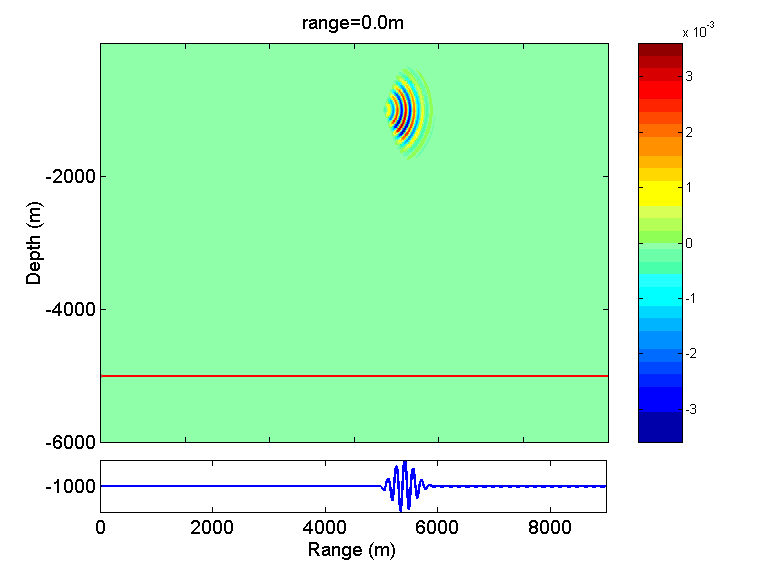

The acoustic field is initialized at 1km-depth by a 10Hz source pulse (5-cycle sine wave). The initial acoustic Mach number is 0.0035. We use Gaussian envelopes to account for the model's angle limitations.
Le champ acoustique est initialisé à 1 km de profondeur par une impulsion source de 10 Hz (sinusoïde de 5 cycles). Le nombre de Mach acoustique initial est de 0,0035. Des enveloppes gaussiennes sont utilisées pour respecter les limitations angulaires du modèle.
The following figures represent the spatial moving frame following the pulse over a 120km range.
Les figures suivantes représentent le repère mobile spatial suivant l'impulsion sur une distance de 120 km.

Fig. 2.a: Linear acoustic propagation Fig. 2.a : Propagation acoustique linéaire (The nonlinear steepening term of the NPE is removed / Terme de raidissement supprimé)
Fig. 2.b: Nonlinear acoustic propagation Fig. 2.b : Propagation acoustique non-linéaire (Full NPE model implementation / Modèle NPE complet)